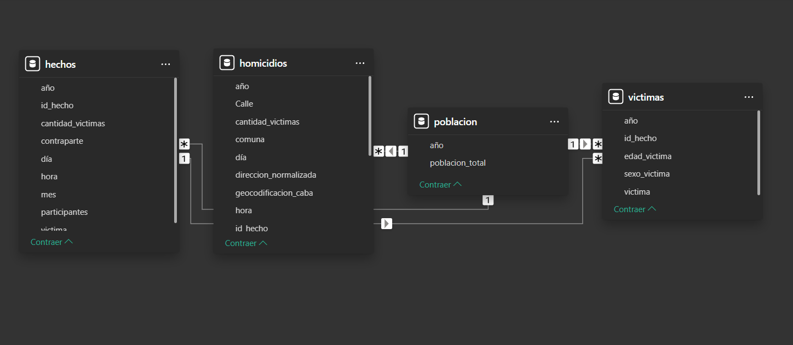
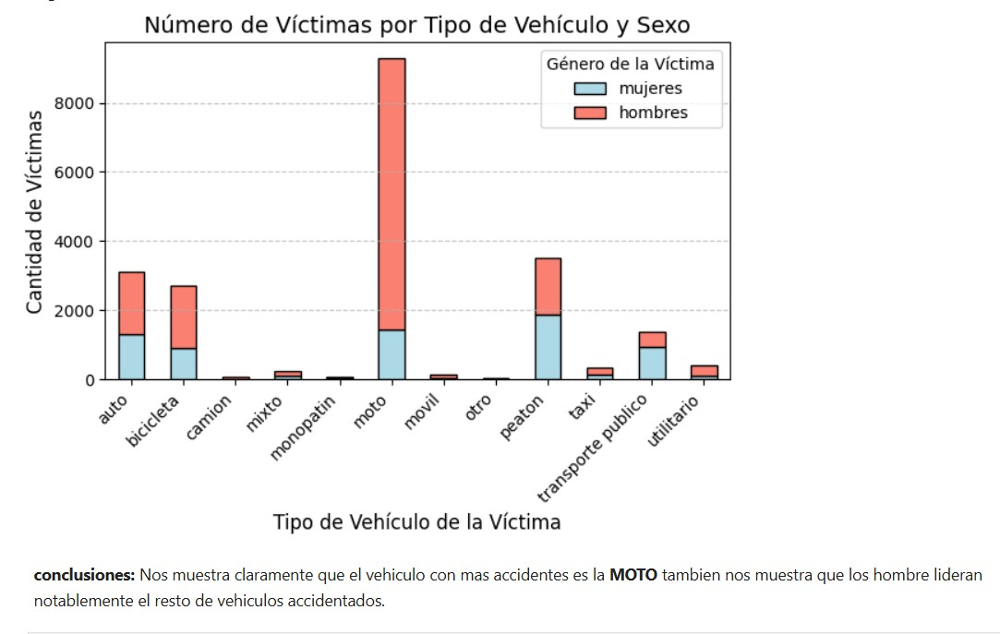
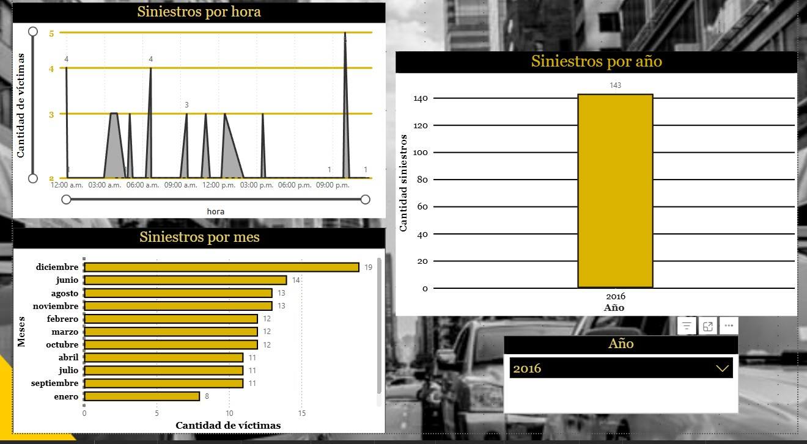
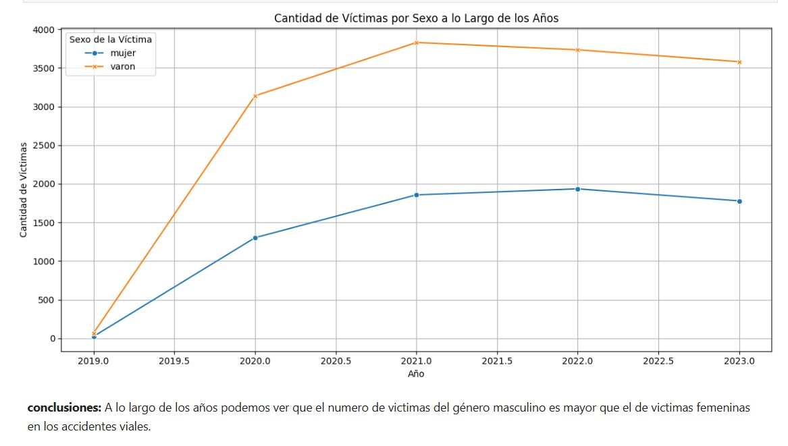

Análisis de Seguridad Vial en Buenos Aires
Estudio integral de accidentes viales utilizando técnicas de análisis de datos y visualización

Descripción del Proyecto
Este proyecto analiza datos de accidentes de tránsito en la Ciudad de Buenos Aires para identificar patrones, factores de riesgo y proponer medidas preventivas. El análisis incluye visualizaciones interactivas y un dashboard completo en Power BI para la toma de decisiones.
Hallazgos Clave
📉 Reducción de Fatalidades
10%
objetivo alcanzable
📊 Datos Analizados
50,000+
registros históricos
Zonas Críticas
- Intersecciones con mayor índice de siniestros
- Horarios de mayor riesgo (noche/madrugada)
- Tipos de vehículos más involucrados
- Áreas con mayor concentración de accidentes
Factores de Riesgo
- Condiciones climáticas adversas
- Estado de la vía
- Comportamiento del conductor
- Factores temporales y estacionales
Metodología
1. Recolección de Datos
- Fuentes de datos oficiales (Gobierno de la Ciudad)
- API de datos abiertos
- Web scraping de reportes públicos
- Datos meteorológicos históricos
2. Procesamiento
- Limpieza y estandarización de datos
- Geocodificación de direcciones
- Clasificación de tipos de accidentes
- Creación de variables derivadas
3. Análisis
- Análisis exploratorio (EDA)
- Identificación de patrones temporales
- Análisis espacial (hotspots)
- Modelado predictivo de riesgo
4. Visualización
- Mapas de calor interactivos
- Series temporales
- Gráficos de correlación
- Dashboard en Power BI
Stack Tecnológico
Análisis de Datos
- Python (Pandas, NumPy)
- Jupyter Notebooks
- SQL para consultas
- GeoPandas
Visualización
- Power BI
- Matplotlib/Seaborn
- Folium (mapas)
- Plotly
Despliegue
- Streamlit
- Docker
- Azure Cloud
- GitHub Actions
Visualizaciones




Impacto y Resultados
Para la Comunidad
- Reducción de accidentes
- Mayor conciencia vial
- Datos para políticas públicas
Para las Autoridades
- Herramienta de decisión
- Optimización de recursos
- Monitoreo en tiempo real
Para los Ciudadanos
- Información accesible
- Rutas más seguras
- Conciencia preventiva